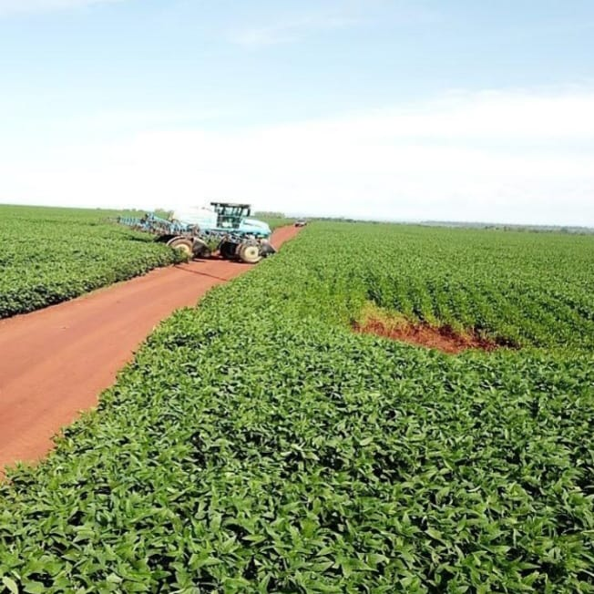
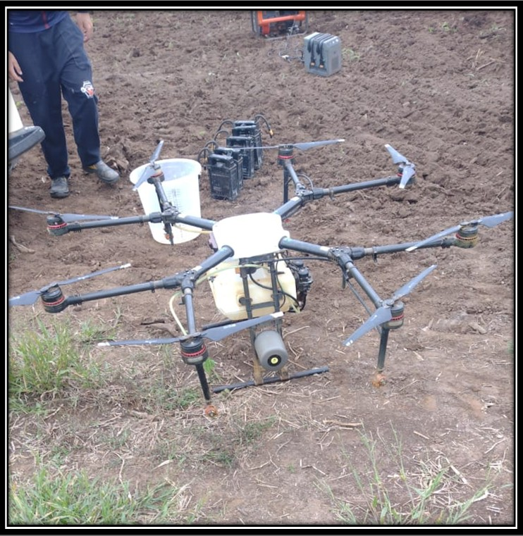

TECNOLOGIA TRANSFORMANDO O SETOR AGRÍCOLA
Com o grande avanço tecnológico ao longo dos anos,
houve uma evolução significativa nos equipamentos agrícolas,
que acabaram se tornando essenciais para a produção em larga escala.
AGRICULTURA DE PRECISÃO
A agricultura de precisão utiliza maquinários modernos como drones pulverizadores,
colheitadeiras e plantadeiras equipadas com GPS e sensores de monitoramento
do solo que fornecem informações mais precisas, para ter um maior controle do cultivo,
irrigação e fertilização, possibilitando otimizar a eficiência e minimizar a perda
de grãos. Tornando as práticas agrícolas cada vez mais produtivas e sustentáveis.



BIOTECNOLOGIA
A biotecnologia ajuda na melhora da qualidade das plantas e aumento da produtividade
de forma sustentável, desenvolvendo culturas mais nutritivas e adaptadas a diferentes
condições de clima, resistentes a pragas e doenças. Juntamente com a Agricultura de
Precisão, atua na redução de custos e perdas pós-colheita, promove o uso eficiente do
solo e possibilita a produção de plásticos biodegradáveis e compostos farmacêuticos.
Além disso, ajuda a monitorar a variabilidade genética e prevenir a extinção de espécies,
contribuindo para a redução do desmatamento e preservação da biodiversidade.